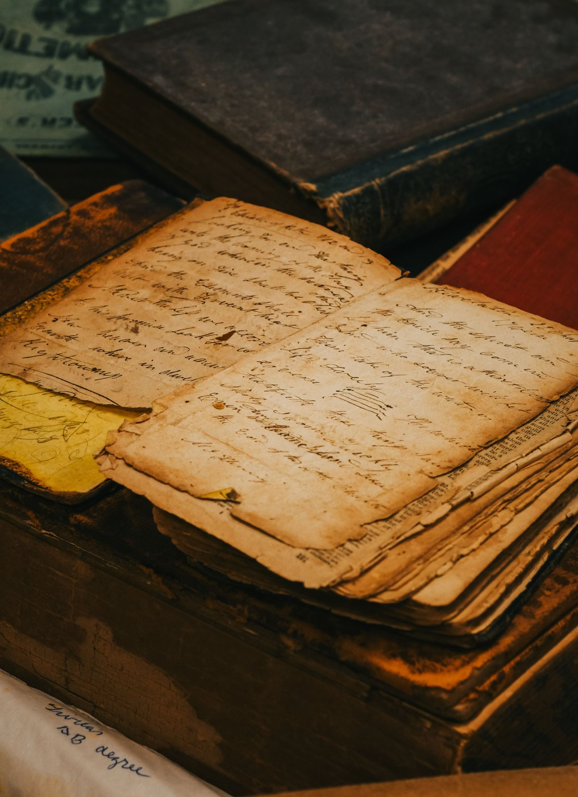

The Oldest Language
Where mathematics began and why it was always yours.
In the McGregor Museum in Kimberley, in the Northern Cape, there is a small piece of bone. It is the fibula of a baboon, about the length of your finger. Someone cut twenty-nine careful notches into it roughly forty-three thousand years ago, then set it down. It was found in Border Cave, in the Lebombo Mountains, along the land that now divides South Africa from Eswatini. As far as anyone knows, it is the oldest mathematical object in the world.
We know almost nothing about the person who held it. Not their name, not the language they spoke, not what they hoped their life might become. We know only that the marks were deliberate, evenly made, cut by a human hand for a reason. Many of the people who have studied the bone believe the count of twenty-nine was a way of following the moon, which takes a little over twenty-nine days to return to where it began. If they are right, one of the earliest mathematicians in human history may have been an African woman, sitting beneath a Southern African sky, keeping time by watching the heavens.
Whether that reading is exactly correct matters less than what it tells us. Mathematical thinking was already happening here. It was happening elsewhere too.

A conversation already begun
We are often taught the history of mathematics as though it belongs to a single place, usually ancient Greece. The Greeks have earned their part in the story. They changed mathematics for good by insisting on proof, on argument, on the patient logic that holds an idea together. They arrived, though, at a conversation that was already long underway. People had been counting and measuring, comparing and predicting, building and trading for thousands of years before anyone in Athens proved a theorem.
In Mesopotamia, in what is now Iraq, scribes were already calculating with real sophistication. In India, mathematicians remade the way numbers themselves were written and understood. In China, the classic texts turned to geometry, to measurement, to the craft of solving problems. Across the Islamic world, scholars gathered the ideas of many cultures, preserved them, translated them and carried them further. Here on this continent, mathematical thinking took shape in forms both practical and profound. The Ishango bone, found near Lake Edward in what is now the Democratic Republic of the Congo, carries columns of notches that historians still puzzle over. Centuries later, the libraries of Timbuktu, in present-day Mali, filled with manuscripts on mathematics and astronomy, on commerce and law.
The story of mathematics is not the story of one civilisation teaching all the others. It is the older, more generous story of human beings trying to understand pattern. That story belongs to everyone. It belongs to you.
The moment the page changes
I tell you this now because there is a good chance you are standing at a particular threshold. Perhaps you are in your final year of school. Perhaps you have already chosen a university and are preparing to study mathematics, engineering, economics, actuarial science, computer science or physics. If so, you are about to meet a kind of mathematics you have not met before.
At school, mathematics tends to feel familiar, even when it is hard. A question appears. You recognise the kind of thing it is. You choose a method, work through the steps and arrive at an answer. The ground feels solid.
Then, somewhere, it shifts. A textbook opens with a definition and lingers on it for half a page. A lecturer writes a single line on the board and talks about it for twenty minutes. A proof unfolds across a whole page. A question asks you not to calculate but to explain. The symbols are ones you know. The words between them are ordinary English. Still the sentence will not open.
Most students meet that moment as a crisis of confidence. They begin to suspect they have found the ceiling of their ability. They have not. More often, they have run into a skill nobody ever taught them by name. Reading.
You have not found the ceiling of your ability. You have run into a skill nobody ever taught you by name.
A language, in the plain sense
Mathematics is a language. I do not mean this as a metaphor or a comforting phrase. I mean it as a description of what the thing actually is. Like any language, it has its own words and its own grammar. They begin to feel natural only after you have spent time with them. Like any language, it rewards those who learn to read it.
Here is one line of mathematics. Read it slowly.
At a glance it may look like a wall of symbols. Read slowly, it is a sentence. The sign at the front, the inverted letter A, is a word. It means “for every.” The letters x and y are variables, names that stand in for numbers. The next symbol means “belongs to,” and the open double-struck R is the set of real numbers: every number you can place on a number line, the positive and the negative, the fractions and decimals, the irrational ones such as π and √2 and zero. The arrow means “implies,” or more plainly, “if, then.” Read aloud, the line says: for every pair of real numbers x and y, if x equals y, then x squared equals y squared.
Now hold the claim in your mind. If x and y are both three, their squares are both nine. If both are minus five, their squares are both twenty-five. The statement holds. In following it that far, you have done something most students are never told is a skill at all. You read. You turned notation into language and symbols into meaning, then tested that meaning against examples. You were not performing a procedure. You were reading mathematics and the difference is larger than it looks.
Why mathematicians read slowly
The easiest mistake when reading mathematics is to believe the definition is the important part, to glance at the examples and move on. Mathematicians tend to do the reverse. They read the definition, study the examples, then return to the definition again. On the second pass, something appears that was invisible on the first. An example throws light on a condition that had seemed unimportant. A word that looked ordinary turns out to be exact.
Think of the word continuous. In conversation it means something that carries on without a break: a continuous road, a continuous sound. In mathematics it has a technical meaning and the everyday sense points only roughly in its direction. The mathematical meaning is sharper and more demanding. The same is true of words like normal, field, degree, relation and trivial. A student recognises the word and assumes the idea is already understood. Mathematics has other plans.
This is why definitions come to matter so much. A definition is not a description. It is an agreement. It tells us precisely what counts and what does not. The difference can seem small. The consequences rarely are. Experienced readers develop a habit that can look strange from the outside. They linger. They stop halfway down a paragraph and turn back a page. They set a definition beside an example and test where its edges lie. Would this still hold if I changed one assumption? What if I removed this condition? What is the author really trying to say? That is not confusion. It is engagement.
A novel tends to move in one direction. Mathematics moves in circles: definition, example, definition again, a theorem, an example, back to the theorem, until a line that seemed clear grows precise and a line that seemed impossible begins to make sense. It is slower than most students expect and that can unsettle you at first, because school so often rewards momentum while university rewards understanding. A student can race through ten pages and learn very little. Another can spend twenty minutes with one definition and carry the idea for years. The goal was never speed. It was meaning. Meaning is where the subject lives.
What mathematicians actually do
It is worth pausing on a question many students carry with them for years: what do mathematicians actually do? The honest answer is hard to give, partly because mathematics turns up in so many places and partly because its public image is so narrow. We picture someone alone in a room of symbols, solving equations, gifted with something the rest of us lack. A few mathematicians fit parts of that picture. Many more do not.
One might spend a morning reading a single paper. Another builds a model of how a disease spreads. Another studies the behaviour of financial markets, or designs the algorithms behind a search engine, or traces how information moves through a network, or reads the slow grammar of a changing climate. The thread that joins them is not calculation. It is the search for structure: for pattern, for relationship, for the principle underneath. Keith Devlin once called mathematics the science of patterns. I have always liked that, because patterns are everywhere. Some are plain: the phases of the moon, the turn of the seasons, the pull of the tides. Others stay hidden until someone builds a language able to describe them: the spread of a virus, the flow of traffic through a city, the movement of money, the way a rumour travels across a network. Mathematics lets us speak about such things with precision. Precision is what allows us to tell what merely feels true from what can be shown, to test an idea rather than admire it, to build knowledge that others can examine and improve.
Those habits travel remarkably well, which is why mathematics surfaces in places that seem, at first, to have nothing to do with it. Consider Anne-Marie Imafidon, who studied mathematics and computer science and became an entrepreneur, author and technology leader. Her work has helped thousands of young people imagine futures in science they had never thought open to them. Or consider Hannah Fry, who trained as a mathematician and became one of the most recognisable voices of mathematics in the world, showing millions of people that it lives not only in classrooms but in friendships and cities, in elections and transport and the algorithms that shape an ordinary day. Neither career follows the stereotype. Neither is built on solving textbook exercises. Both rest on mathematical thinking: the ability to see a pattern, to reason with care, to move from evidence to conclusion without skipping the steps that matter, to explain a difficult idea clearly.
That is why I am always a little wary when mathematics is called a subject. It is one, of course. You can study it, examine it, teach it. It is also a way of looking at the world and once you begin to see through that lens, certain things become hard to ignore. Assumptions show themselves. Patterns come into focus. Arguments grow easier to weigh and questions grow more interesting.
The invitation of the page
This is part of what students discover at university, where the difficulty is not only that the mathematics grows more advanced but that the relationship changes. At school it can feel like a collection of techniques. At university it begins to reveal itself as a collection of ideas. The techniques still matter. The ideas move to the centre. A proof is no longer a thing to memorise. It is an argument to understand. A definition is no longer a sentence to recall in an examination. It is the ground everything else is built upon. An example is no longer an illustration. It is evidence.
The students who flourish are not always the quickest. They are the ones who grow curious about meaning, who are willing to pause and reread, to ask what a statement is really saying, to wonder why a particular condition sits inside a definition, to look at an example until it opens onto something larger. Those habits are less visible than speed and less showy than confidence. They are far closer to what mathematicians actually do. Understanding, it turns out, is not something that arrives after reading. It is something that grows through it.
Soon, if it has not happened already, you will meet a page that is unusually hard to read. The symbols may be old friends. The difficulty will come from somewhere else: a definition that seems to hold more meaning than should fit in a sentence, a proof that steps from one line to the next and leaves you wondering how the writer knew the way, a paragraph that asks to be read two or three times before it gives anything up. For a student who has done well for years, that can be unsettling. Success teaches you to trust your instincts and to expect that effort will be repaid. Sometimes it is. Sometimes the subject asks for something else.
The temptation is to read that moment as proof of some limit in yourself. I would ask you to be slow to believe it. University mathematics introduces most students to ideas they have never handled before: abstraction, proof, generalisation, formal definition, arguments that run for pages rather than lines. What these ask for is not only more effort but a different kind of attention. The old virtues still hold: discipline, persistence and care. You will need every one of them. You may also need a patience of a rarer kind: the patience to sit with an idea before you have mastered it, to return to a definition more than once, to remain in uncertainty while understanding takes shape. Nobody applauds a student for spending twenty minutes on a single sentence. Yet some of the most important moments in mathematics begin exactly there: when a sentence finally says what it means, when an example suddenly makes sense, when a proof that looked impossible becomes plain and the page begins to open. Looking back, the moment can seem obvious. It almost never feels that way at the time.
I began with the Lebombo bone for a reason. Not to settle any debate, but to remind us that mathematics did not arrive in the world fully formed. Someone had to notice the pattern. Someone had to keep the count, to ask the question, to invent a way of holding the idea still long enough to pass it on. The chain is longer than we tend to imagine. It runs from those marks cut into bone in the mountains between South Africa and Eswatini, through Mesopotamia, through India and China, through the scholars of Africa and the Middle East and Europe, through the libraries of Timbuktu, through centuries of mathematicians and teachers, until it reaches a student at a desk, preparing for university. Perhaps that student is you. If so, you are not standing outside the story. You are stepping into it.
That does not mean you must become a mathematician. Most people who learn the language do not. Some become engineers, some economists, some doctors or founders or researchers or teachers. Many will build careers that do not yet have names. The point was never where mathematics finally takes you. The point is that learning its language changes the way you think. It teaches precision and careful reasoning and the difference between a hunch and an argument. It teaches you to ask a better question. Those habits outlast any particular formula.
Perhaps that is why mathematics has lasted so long. Not because it hands us answers, since many subjects do that, but because it teaches a way of thinking about answers: how to examine them, test them, understand them, explain them to someone else. That is what the page is for. It is not a heap of symbols. It is one human being trying to reach another, sometimes across a classroom, sometimes across a century, sometimes across forty-three thousand years. The person who notched the Lebombo bone was trying to hold on to a pattern. The scholars of Timbuktu were doing the same. So is the mathematician who writes a textbook and the lecturer at the front of the hall. Every one of them is part of one long conversation about pattern and structure and meaning. You are about to join it.
You do not need to know everything. You do not need to understand every page the first time. You need only be willing to read with care, to think with patience, to stay curious. Mathematics was a language the whole time. The symbols were words. The definitions were attempts at precision. The proofs were arguments. The examples were meaning made visible. The page was always trying to say something.
Nobody is born fluent. Not the person who cut marks into a bone forty-three thousand years ago. Not the scholars of Timbuktu, not Anne-Marie Imafidon, not Hannah Fry, not the mathematicians who write the textbooks you are about to open. Not you. Every one of them had to learn to read. Perhaps that is where mathematics truly begins. Not when you find an answer, but when the page begins to speak.
Lerato Molisana